01
《求是》杂志发表习近平总书记重要文章《在加强基础研究座谈会上的讲话》
9月16日出版的第18期《求是》杂志发表中共中央总书记、国家主席、中央军委主席习近平的重要文章《在加强基础研究座谈会上的讲话》。
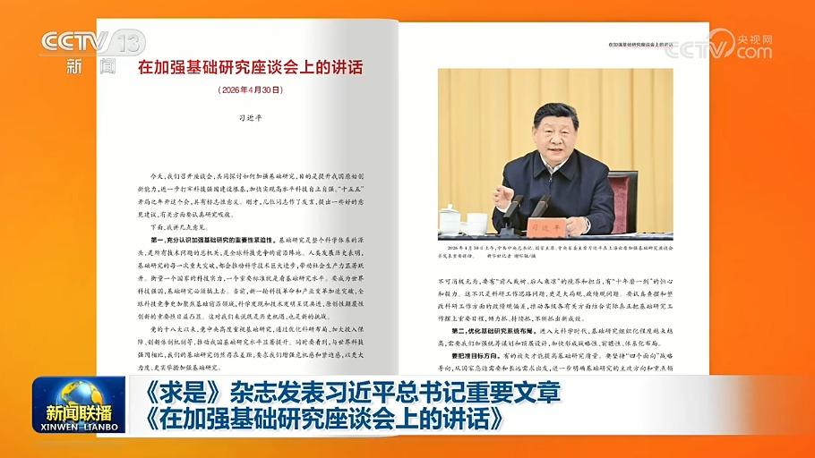
9月16日出版的第18期《求是》杂志发表中共中央总书记、国家主席、中央军委主席习近平的重要文章《在加强基础研究座谈会上的讲话》。
中共中央总书记、国家主席、中央军委主席习近平16日致信祝贺吉林大学建校80周年，向全体师生员工和广大校友致以祝贺。
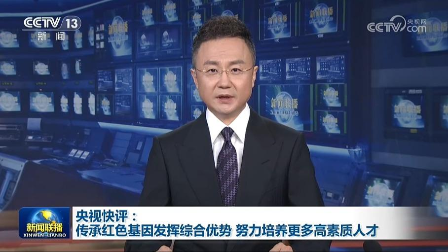
本台今天（9月16日）播发央视快评《传承红色基因发挥综合优势 努力培养更多高素质人才》。
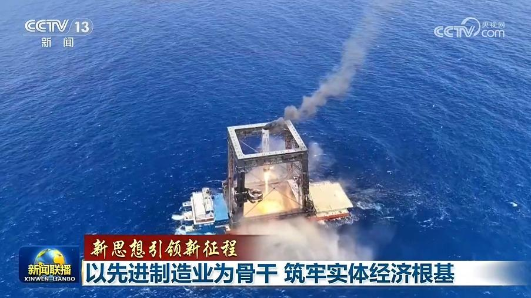
习近平总书记指出，现代化产业体系的骨干是先进制造业。要保持制造业合理比重、大力发展先进制造业。
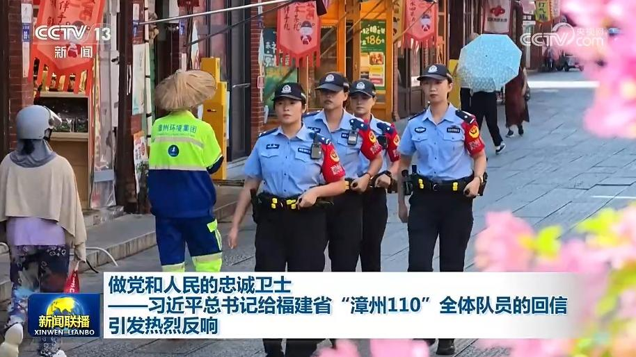
近日，习近平总书记给福建省“漳州110”全体队员的回信在全国公安系统引发热烈反响，广大公安干警表示，一定牢记总书记嘱托，坚守为民初心，矢志担当奉献，做党和人民的忠诚卫士。
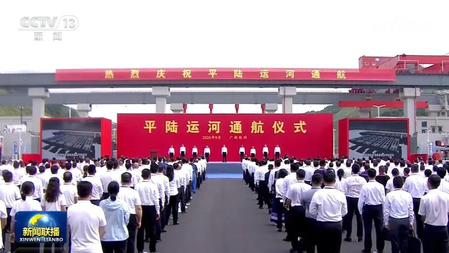
9月16日上午，中共中央政治局常委、国务院副总理丁薛祥在广西钦州出席平陆运河通航仪式。
中共中央政治局常委、国务院副总理丁薛祥将于9月17日出席在广西南宁举行的第23届中国—东盟博览会暨中国—东盟商务与投资峰会开幕式并致辞。
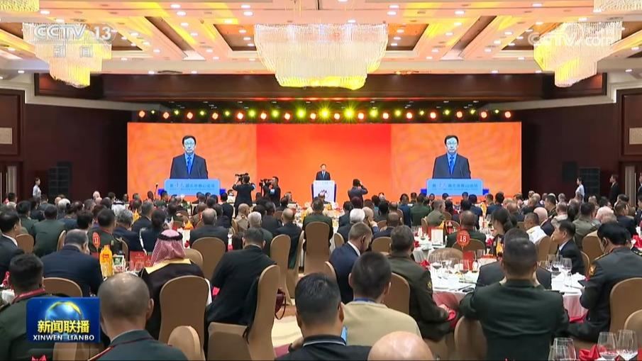
9月15日，国家副主席韩正出席第十三届北京香山论坛欢迎晚宴并致辞。韩正表示，当前世界百年变局加速演进，国际形势变乱交织。面对世界之变、时代之变、历史之变，习近平主席提出构建人类命运共同体理念和四大全球倡议，为解决人类面临的共同问题指明了方向。
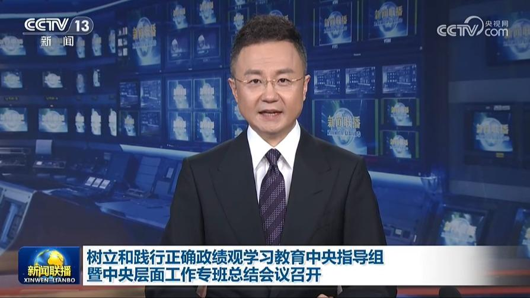
树立和践行正确政绩观学习教育中央指导组暨中央层面工作专班总结会议16日在京召开。会议强调，这次学习教育在党中央坚强领导下，扎实深入开展，取得明显成效。树立和践行正确政绩观是一项长期任务，要更加紧密团结在以习近平同志为核心的党中央周围，深入学习贯彻习近平新时代中国特色社会主义思想特别是习近平党建思想，巩固拓展学习教育成果，树牢宗旨意识、增强党性觉悟，坚持为人民出政绩、以实干出政绩，为以中国式现代化全……
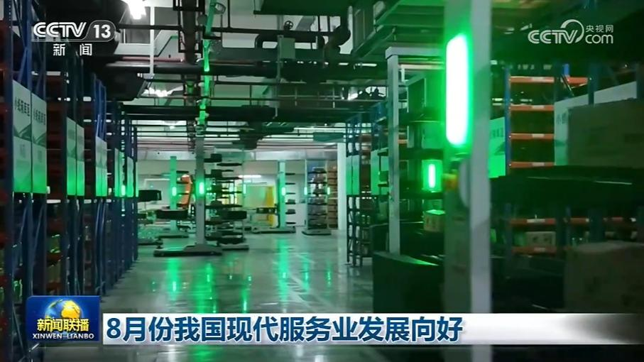
国家统计局发布的数据显示，8月份，全国服务业生产指数同比增长4.1%，保持总体平稳。以人工智能为代表的新技术应用加快拓展、算力需求快速增长，新兴服务业实现快速发展。8月份，信息传输、软件和信息技术服务业生产指数同比增长9.6%，对服务业生产指数增长的贡献超过20%。
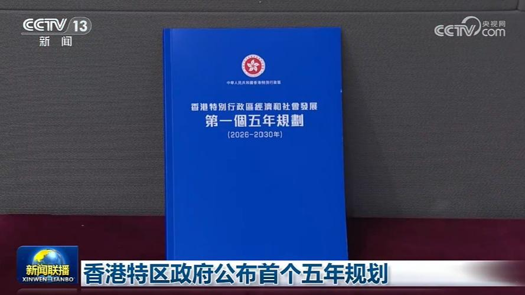
香港特别行政区政府今天（9月16日）公布《香港特别行政区经济和社会发展第一个五年规划（2026—2030年）》。
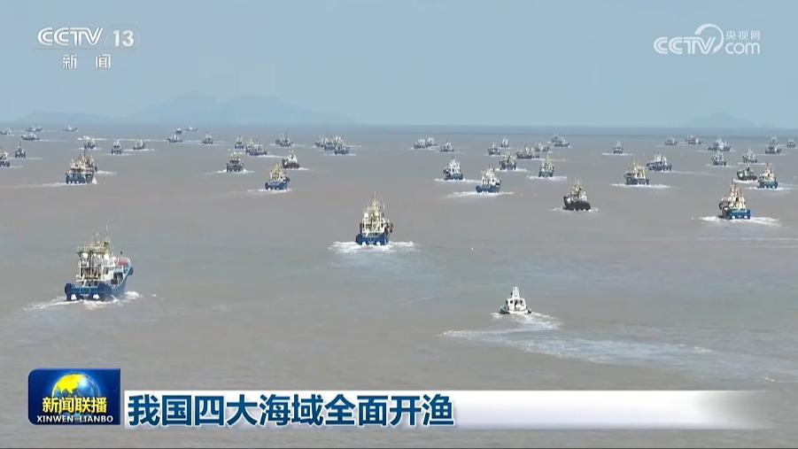
今天（9月16日）12时，北纬35度至北纬26度30分之间的黄海和东海海域结束伏季休渔，至此，我国渤海、黄海、东海、南海四大海域全面开渔。
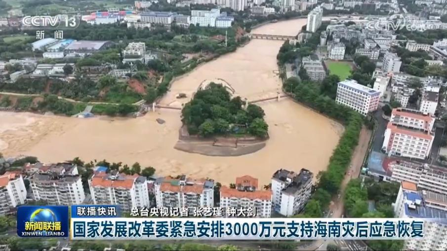
国家发展改革委紧急安排3000万元支持海南灾后应急恢复
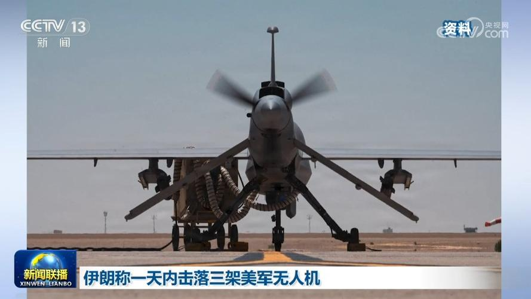
伊朗伊斯兰革命卫队15日称，伊方当天在霍尔木兹海峡上空击落一架美军MQ-1无人机，并称这是当天击落的第三架同型号美军无人机。美方尚未对此作出回应。
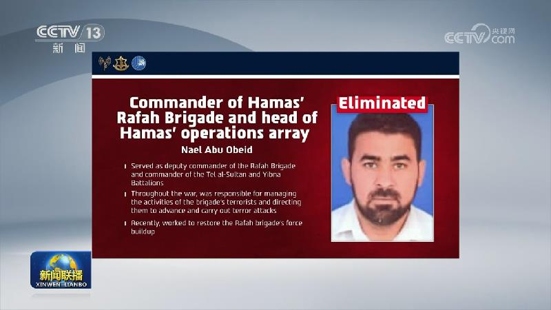
沙特称也门胡塞武装无人机袭击麦加